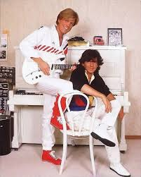

Modern Talking foi uma dupla alemã, composta pelos músicos Thomas Anders e Dieter Bohlen, tendo tido sucesso, principalmente nos anos 1980. Foi o duo pop mais bem sucedido da Alemanha, e de uma certa maneira, moldou a história musical da década de 1980.
Como está Modern Talking hoje? Além de ser um mentor influente, Bohlen também lançou várias compilações das suas canções e continuou a trabalhar como produtor musical. O impacto dos Modern Talking na música pop é incontornável e prova disso é que, mesmo após décadas, as suas canções continuam a ser ouvidas e reconhecidas por milhões de pessoas.